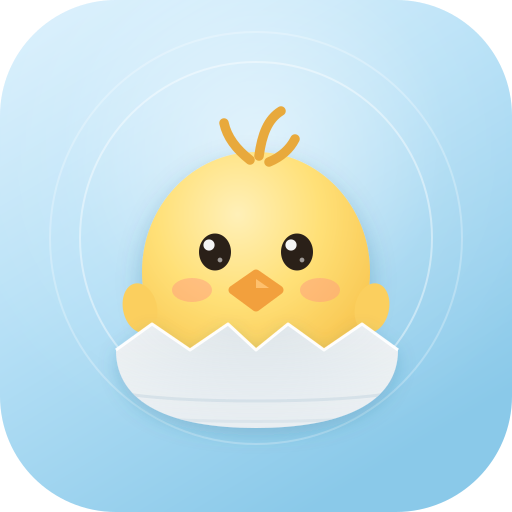

安全
暂时没什么要处理的，你先忙。
启动日志
实时
实时防护
文件落地与进程启动实时询问
- 正在监听进程启动

Qone Security监督只读取进程启动事件，不拦截、不清除。可信程序不受启动位置影响。
判定顺序：白名单 → 安装目录 → 临时/下载目录 → 签名。未签名本身不算可疑，只有临时目录和下载目录里的未知程序才会提示。
按进程名精确匹配，不支持通配与前缀——恶意程序无法靠在名字里加后缀蹭到信任。
内置项不可移除。自定义项保存在本机配置中，重启后仍然有效。
逐层过检：哈希定案最快，YARA抓行为特征，PE 启发式看结构。哈希层没有开关——它是误报最低的一层，关掉等于让扫描走过场。
本项目以 MIT 许可发布。ClamAV 是 GPLv2，我们只通过套接字调用独立的 clamd 进程，不链接它的代码，因此不被传染。各组件的完整许可声明在作者页 · 许可证。
规则由本项目自己维护，随版本发布；哈希摘要那条线走你自己的 abuse.ch Key，数据只留在本机。不需要任何账号，也不需要连我们的服务器——没有服务器。
只下载规则文件，不下载样本、不下发哈希。落盘前三关：SHA-256 与清单比对、拒绝 include 指令、整包试编译一次——任何一关不过就整包丢弃，不做部分生效。规则是你的，所以这条通道随便开；哈希不是，所以那条通道必须由你自己授权。
© 2026 Sun2530 · 保留所有权利
当前只提供简体中文界面。其余语言需要完整翻译与排版适配，尚未接入。
切换语言会改变整个界面的文案，不是只换几个标题，所以没有做半成品。
以下能力需要内核驱动配合，当前版本未接入。开关仅作占位，不会改变任何系统状态。
真要实现这些，需要签名内核驱动与兼容性认证，是另一个量级的工作。我不把它们做成看起来生效的样子。
也可以直接写在下面，保存为本机文本文件，方便你随时取回。当前版本没有服务端，不会自动上传任何内容。
保存位置：%LOCALAPPDATA%\Qone Security\feedback\
配置目录：%LOCALAPPDATA%\Qone Security · 启动项：HKCU\...\Run\Qone Security
隔离区是空的。
扫描里处置掉的文件会挪到这里，随时可以取回。